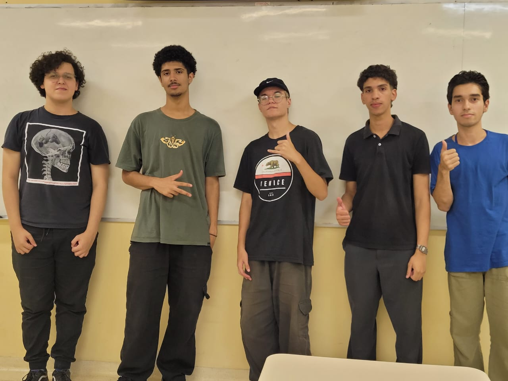

Nossa missão na Bigrafia Tudo Sobre é Capacitarmos indivíduos a conhecer histórias de vida de maneira autêntica, preservando legados para as gerações futuras. Nossa visão de longo prazo é imaginar um mundo onde cada história é valorizada, preservada e transmitida, contribuindo para um entendimento mais profundo e significativo entre as pessoas, e trabalhamos diariamente para alcançá-la. Junte-se a nós enquanto continuamos a moldar o futuro.

PARTICIPANTES
